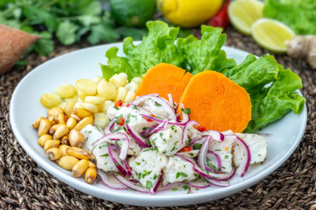
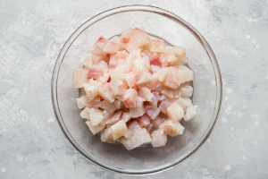
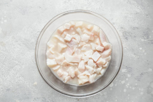
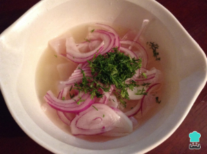
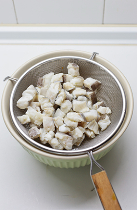
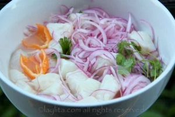
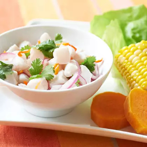

Ceviche de pescado
Receta del ceviche de pescado.

Ingredientes
- 1 pizca de pimienta
- 1 kilogramo de pescado de tu elección
- 1 cebolla cortada en julianas
- 1/4 taza de taza cilantro de hoja picada
- 1 ají amarillo picado
- 1 ají limo picado
- 12 limones
- 1 pizca de sal y pimienta
- 1/2 kilo de cancha serrana
- 1 taza de caldo de pescado
- 1 maíz tierno sancochado
- 1 camote sancochado (batata o boniato)
- 1 manojo de hojas de lechuga
Elaboración
- Corte el pescado en cubos pequeños y colóquelos en un recipiente de vidrio.
- Cubra los pedazos de pescados con agua bien fría y 1 cucharada de sal, tape y refrigere mientras se prepara la cebolla y el jugo de los limones.
- Frote las rodajas de cebolla con 1/2 cucharada de sal y enjuague con agua fría.
- Enjuague el pescado para eliminar la sal.
- Ponga los cubos de pescado, la mitada de las rodajas de cebolla, las ramas de cilantro, y los ajíes en un recipiente de vidrio y vierta el jugo de limón sobre los ingredientes.
- Para servir ponga el ceviche en cada recipiente, ya sea un plato o bol, agregue un poco de las rodajas de cebolla, el cilantro picado, y aji picadito al gusto.